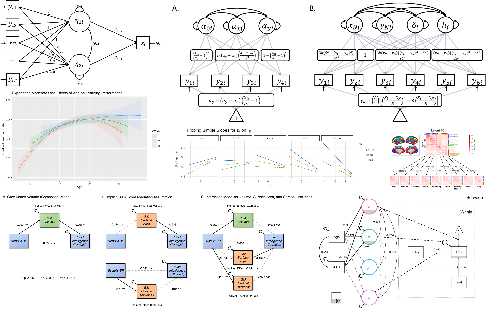

Publications
\(\dagger\) denotes supported trainee co-author at time of publication | \(*\) denotes senior/corresponding author role

Preprints
5. Schaaf, J.V., Sørensen, Ø., McCormick, E.M., Aristodemou, M., & Kievit, R.A. (preprint). Advocating a new default for time series modeling: Asymmetric temporal dynamics using threshold dynamics parameters. Preprint Supplemental Material
4. McCormick, E.M. (preprint). A tutorial on formalizing and testing specific psychological theory using nonlinear models. Preprint Supplemental Material
3. Sadeghi, N., Van Der Velpen, I., Baker, B., Batta, I., Genon, S., McCormick, E. M., Michel, L., Moraczewski, D., Morton, J.B., Seraji, M., Shaw, P., Silva, R.F., Soleimani, N., Sprooten, E., Sørensen, Ø., Thomas, A.G., Wazana, A., Zhou, Z., Calhoun, V., Chakravarty, M.M., Kievit, R.A., Plachti, A., Zuo, X., & White, T. (preprint). What do we really know about the interplay between brain, behavior, and cognition from childhood to early adulthood? An international group effort to generate and share simulated datasets. Preprint | Supplemental Material
2. \(^{\dagger}\)König, M., Smith, A., Moreno-Lopez L., Davidson, E., Dauvermann, M., Orellana, S., McCormick, E. M., Kaçer, M., Ioannidis, K., & Van Harmelen, A. L. (preprint). Friendship buffering effects on mental health symptoms before and during the COVID-19 pandemic: a UK longitudinal study of young people with childhood adversity. Preprint | Supplemental Material
1. McCormick, E. M., Borgeest, G. S., & Kievit, R. A. (preprint). Interrupted mediation: A cautionary note on using derived metrics as intervening variables in path models. Preprint | Supplemental Material
Published
In press
40. Brandmaier, A. M., Lindenberger, U., & \(\mathbf{^*}\)McCormick, E. M. (in press). Optimal Two-Time Point Longitudinal Models for Estimating Individual-Level Change: Asymptotic Insights and Practical Implications. Developmental Cognitive Neuroscience, Accepted September 2024 Supplemental Material Preprint |
39. McCormick, E. M. (in press). Deriving models of change with interpretable parameters: linear estimation with nonlinear inference. Psychometrika, Accepted September 2024. Supplemental Material | Preprint | LENI Package
2024
38. McCormick, E. M. & Bauer, D. J. (2024). How should we model the effect of “change” - or should we?. Psychological Methods, Advance online publication. https://doi.org/10.1037/met0000663
Download | Supplemental Material | Preprint
37. McCormick, E. M., Curran, P. J. & Hancock G. R. (2024). Latent Growth Factors as Predictors of Distal Outcomes. Psychological Methods, Advance online publication. https://doi.org/10.1037/met0000642
Download | Supplemental Material | Preprint
36. \(^\dagger\)Michel L. C., McCormick, E. M., & Kievit, R. A. (2024). Grey and white matter metrics demonstrate distinct and complementary prediction of differences in cognitive performance in children: Findings from ABCD (N= 11 876). Journal of Neuroscience, 44(12), e0465232023oi. https://doi.org/10.1523/JNEUROSCI.0465-23.2023
Download | Supplemental Material | Preprint | BibTeX File
35. \(^{\dagger}\)Parsons, S., & McCormick, E. M. (2024). Limitations of two time point data for understanding individual differences in longitudinal modeling — What can difference reveal about change?. Developmental Cognitive Neuroscience, 66, 101353. https://doi.org/10.1016/j.dcn.2024.101353
Download | Supplemental Material | Preprint
2023
34. Duell, N., Perino, M. T., McCormick, E. M., & Telzer, E. H. (2023). Differential processing of risk and reward in delinquent and non-delinquent youth. Social Cognitive and Affective Neuroscience, 18(1), 1-9. https://doi.org/10.1093/scan/nsad040
Download
33. McCormick, E. M., Byrne, M. L., Flournoy, J. C., Mills, K. L., & Pfeifer, J. H. (2023). The Hitchhiker’s Guide to Longitudinal Models: A Primer on Model Selection for Repeated-Measures Methods. Developmental Cognitive Neuroscience, 63, 101281. https://doi.org/10.1016/j.dcn.2023.101281
Download | Code Companion | Supplemental Material | Preprint
32. McCormick, E. M., Cam-CAN, & Kievit, R. A. (2023). Poorer white matter microstructure predicts slower and more variable reaction time performance: evidence for a neural noise hypothesis in a large lifespan cohort. Journal of Neuroscience, 43(19), 3557-3566. https://doi.org/10.1523/JNEUROSCI.1042-22.2023
Download | Supplemental Material | Preprint
31. \(^{\dagger}\)Jorgensen, N. A., Muscatell, K. A., McCormick, E. M., Prinstein, M. J., Lindquist, K. A., & Telzer, E. H. (2023). Neighborhood Disadvantage, Race, and Neural Sensitivity to Social Threat and Reward among Adolescents. Social Cognitive and Affective Neuroscience, 18(1), 1-12. https://doi.org/10.1093/scan/nsac053
Download
2022
30. \(^{\dagger}\)Metherell, T. E., Ghai, S., McCormick, E. M., Ford T. J., & Orben, A. (2022). Digital exclusion predicts worse mental health among adolescents during COVID-19. Scientific Reports, 12. 19088. https://doi.org/10.1038/s41598-022-23899-y
Download | Supplemental Material | Preprint
29. \(^{\dagger}\)Do, K. T., McCormick, E. M., Prinstein, M. J., Lindquist, K. A., & Telzer, E. H. (2022). Intrinsic connectivity within the affective salience network moderates adolescent susceptibility to negative and positive peer norms. Scientific Reports, 12. 17463. https://doi.org/10.1038/s41598-022-17780-1
Download
28. McCormick, E. M., Arnemann, K. L., Ito, T., Hanson, S. J., & Cole, M. W. (2022). Latent functional connectivity underlying multiple brain states. Network Neuroscience, 6(2), 570-590. https://doi.org/10.1162/netn_a_00234
Download | Supplemental Material | Preprint
27. Kievit, R. A, McCormick, E. M.*, Fuhrmann, D.*, Deserno, M.*, & Orben, A*. (2022). Using large, publicly available data sets to study adolescent development: opportunities and challenges. Current Opinion in Psychology, 44, 303-308. * denotes equal contribution https://doi.org/10.1016/j.copsyc.2021.10.003
Download | OSF Resource | Preprint
2021
26. McCormick, E. M. (2021). Multi-Level Multi-Growth Models: New opportunities for addressing developmental theory using advanced longitudinal designs with planned missingness. Developmental Cognitive Neuroscience, 51, 101001. https://doi.org/10.1016/j.dcn.2021.101001
Download | Supplemental Material | Preprint
25. McCormick, E. M., Peters, S., Crone, E. A., & Telzer, E. H. (2021). Longitudinal Network Re-organization Across Learning and Development. NeuroImage, 229, 117784. https://doi.org/10.1016/j.neuroimage.2021.117784
Download | Supplemental Material | Preprint
24. Duell, N., van Hoorn, J., McCormick, E. M., Prinstein, M. J., & Telzer, E. H. (2021). Hormonal and neural correlates of prosocial conformity in adolescents. Developmental Cognitive Neuroscience, 48, 100936. https://doi.org/10.1016/j.dcn.2021.100936
Download
2020
23. Kwon, S-J. Do, K. T., McCormick, E. M., & Telzer, E. H. (2020). Neural correlates of conflicting social influence on adolescent risk-taking. Journal of Research on Adolescence, 31(1), 139-152. https://doi.org/10.1111/jora.12587
Download
22. Do, K. T., McCormick, E. M., & Telzer, E. H. (2020). Neural sensitivity to conflicting attitudes supports greater conformity toward positive over negative influence in early adolescence. Developmental Cognitive Neuroscience, 45, 100837. https://doi.org/10.1016/j.dcn.2020.100837
Download
21. van Hoorn, J., McCormick, E. M., Perino, M. T., Rogers, C. R., & Telzer, E.H. (2020). Differential behavioral and neural profiles in high-risk youth with conduct problems during risky decision-making. Journal of Research on Adolescence, 30(3), 599-615. https://doi.org/10.1111/jora.12546
Download
20. Chen, X., McCormick, E. M., Ravindran, N., Telzer, E. H., & McElwain, N. L. (2020). Maternal emotion socialization in early childhood predicts adolescents’ amygdala-vmPFC functional connectivity to emotion faces. Developmental Psychology, 56(3), 503-515. http://dx.doi.org/10.1037/dev0000852
Download
2019
19. Perino, M. T., Guassi Moreira, J., McCormick, E. M., & Telzer, E. H. (2019). Apples to apples? Neural correlates of emotion regulation differences between high and low risk adolescents. Social Cognitive and Affective Neuroscience, 14(8), 827-836. https://doi.org/10.1093/scan/nsz063
Download
18. Kwon, S-J., Ivory, S. L., McCormick, E. M., & Telzer, E. H. (2019). Behavioral and neural dysregulation to social reward and links to internalizing symptoms in adolescents. Frontiers in Behavioral Neuroscience, 13, 158. https://doi.org/10.3389/fnbeh.2019.00158
Download
17. McCormick, E. M., McElwain, N. L., & Telzer, E. H. (2019). Alterations in adolescent dopaminergic systems as a function of early mother-toddler attachment: a prospective longitudinal examination. International Journal of Developmental Neuroscience, 78, 122-129. https://doi.org/10.1016/j.ijdevneu.2019.06.010
Download
16. Do, K. T., McCormick, E. M., & Telzer, E. H. (2019). The neural development of prosocial behavior from childhood to adolescence. Social Cognitive and Affective Neuroscience, 14(2), 129-139. https://doi.org/10.1093/scan/nsy117
Download
15. McCormick, E. M., Gates, K. M., & Telzer, E. H. (2019). Model-based network discovery of developmental and performance-related differences during risky decision-making. NeuroImage, 188, 456-464. https://doi.org/10.1016/j.neuroimage.2018.12.042
Download
2018
14. McCormick, E. M. & Telzer, E. H. (2018b). Contributions of default mode network stability and deactivation to adolescent task engagement. Scientific Reports, 8(1), 18049. https://doi.org/10.1038/s41598-018-36269-4
Download
13. van Hoorn, J., McCormick, E. M., Rogers, C. R., Ivory, S. L., & Telzer, E. H. (2018). Differential effects of parent and peer presence on neural correlates of risk taking in adolescence. Social Cognitive and Affective Neuroscience, 13(9), 945-955. https://doi.org/10.1093/scan/nsy071
Download
12. McCormick, E. M., van Hoorn, J., Cohen, J. R., & Telzer, E. H. (2018). Functional connectivity in the social brain across childhood and adolescence. Social Cognitive and Affective Neuroscience, 13(9), 819-830. https://doi.org/10.1093/scan/nsy064
Download
11. Rogers, C. R., McCormick, E. M., Van Hoorn, J., & Telzer, E.H. (2018). Neural correlates of sibling closeness and association with externalizing behavior in adolescence. Social Cognitive and Affective Neuroscience, 13(9), 977-988. https://doi.org/10.1093/scan/nsy063
Download
10. Muscatell, K. A., McCormick, E. M., & Telzer, E. H. (2018). Subjective social status and neural processing of race in Mexican American adolescents. Development and Psychopathology, 30(5), 1837-1848. https://doi.org/10.1017/s0954579418000949
Download
9. van Hoorn, J., McCormick, E. M., & Telzer, E. H. (2018). Moderate social sensitivity in a risky context supports adaptive decision-making in adolescence: Evidence from brain and behavior. Social Cognitive and Affective Neuroscience, 13(5), 546-556. https://doi.org/10.1093/scan/nsy016
Download
8. Telzer, E. H., McCormick, E. M., Peters, S., Cosme, D., Pfeifer, J. H., & van Duijvenvoorde, A. C. K. (2018). Methodological considerations for developmental longitudinal fMRI research. Developmental Cognitive Neuroscience, 33, 149-160. https://doi.org/10.1016/j.dcn.2018.02.004
Download
7. McCormick, E. M., Perino, M. T., & Telzer, E. H. (2018). Not just social sensitivity: Selective adolescent suppression of social feedback during risk taking}. Developmental Cognitive Neuroscience, 30, 134-141. https://doi.org/10.1016/j.dcn.2018.01.012
Download
6. McCormick, E. M., & Telzer, E. H. (2018a). Not doomed to repeat: Enhanced neural tracking of errors promotes adaptive task performance during adolescence. Journal of Cognitive Neuroscience. 30(3), 281-289. https://doi.org/10.1162/jocn_a_01206
Download
5. Qu, Y., Pomerantz, E. M., McCormick, E. M., & Telzer, E. H. (2018). Youth’s conceptions of adolescence predict longitudinal changes in prefrontal cortex activation and risk taking. Child Development, 89(3), 773-783. https://doi.org/10.1111/cdev.13017
Download
2017
4. McCormick, E. M., Qu, Y., & Telzer, E. H. (2017). Activation in context: Differential conclusions drawn from cross-sectional and longitudinal analyses of adolescents’ cognitive control-related neural activity. Frontiers in Human Neuroscience, 11, 141. https://doi.org/10.3389/fnhum.2017.00141
Download
3. McCormick, E. M. & Telzer, E. H. (2017b). Failure to retreat: Blunted sensitivity to negative feedback supports risky behavior in adolescents. NeuroImage, 147, 381-389. http://dx.doi.org/10.1016/j.neuroimage.2016.12.041
Download
2. McCormick, E. M. & Telzer, E. H. (2017a). Adaptive adolescent flexibility: Neurodevelopment of decision-making and learning in a risky context. Journal of Cognitive Neuroscience, 29, 413-423. https://doi.org/10.1162/jocn_a_01061
Download
2016
1. McCormick, E. M., Qu, Y., & Telzer, E. H. (2016). Adolescent neurodevelopment of cognitive control and risk-taking in negative family contexts. NeuroImage, 124, 989-996. http://dx.doi.org/10.1016/j.neuroimage.2015.09.063
Download
Chapters
- Curran, P.J., Strauss, C., McCormick, E.M., & McGinley, J.S. (2023). A multivariate growth curve model for three-level data. In H. Cooper (Ed.) APA Handbook of Research Methods in Psychology, Second Edition. Washington, DC: American Psychological Association.